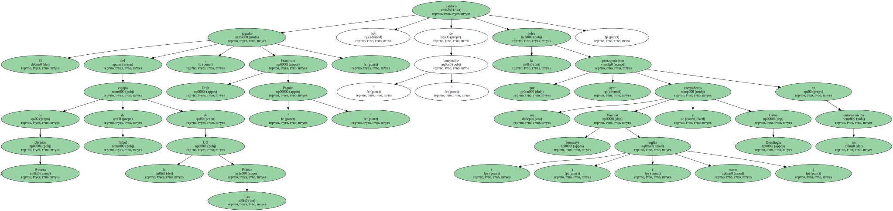
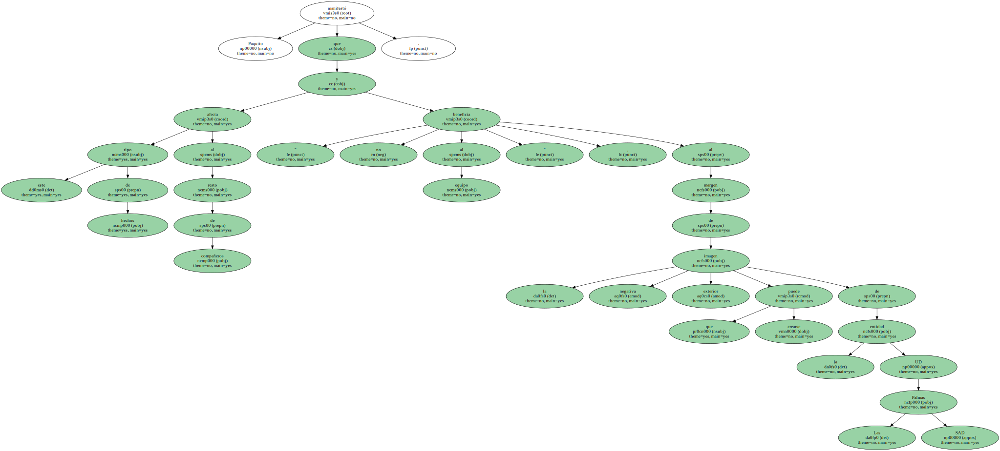
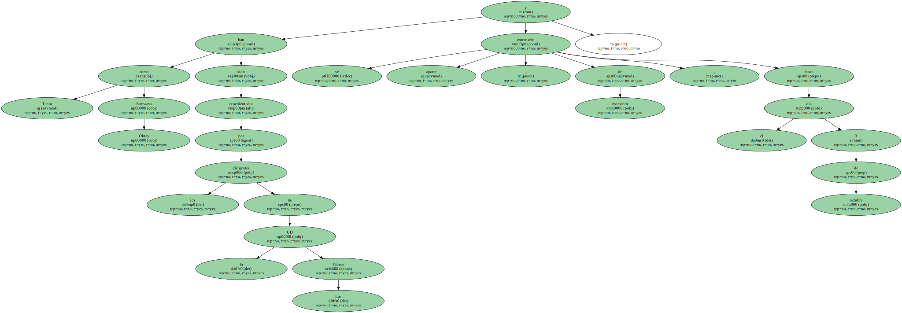
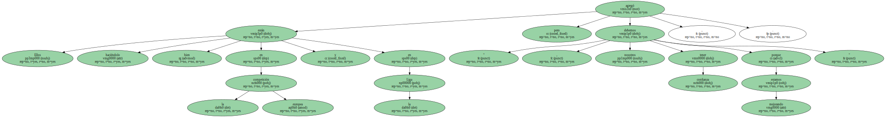

El jugador del equipo de Primera División de fútbol de la UD Las Palmas , Francisco Ortíz " Paquito " , calificó hoy de " lamentable " la pelea que ayer protagonizaron sus compañeros Vincent Samways ( inglés ) y Oktay Derelioglu ( turco ) en un entrenamiento.
Paquito manifestó que este tipo de hechos afecta al resto de compañeros y " no beneficia al equipo " , al margen de la negativa imagen exterior que puede crearse de la entidad UD Las Palmas SAD.
Tanto Samways como Oktay han sido expedientados por los dirigentes de la UD Las Palmas y se entrenarán aparte , de momento , hasta el día 3 de octubre.
El jugador de la cantera canaria Paquito , que no ha actuado esta temporada como titular , opinó que es momento de olvidar la agresión entre sus dos compañeros y llegó la hora de pensar en el partido del próximo domingo frente al Valencia , " que será un rival complicado ".

" Ellos están haciéndolo bien en la competición europea y en la Liga , pero nosotros debemos tener confianza porque estamos mejorando " , agregó.
